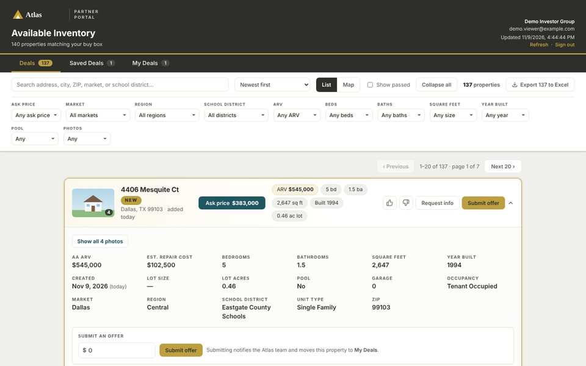

Live demo
Partner Deal Portal
A secure deal portal for outside investor partners.
- Before
- Deals went out as lists. Each partner's buy box was filtered by hand, and offers and questions came back by email.
- Now
- Each partner sees only the deals that fit their buy box, on a map or a list, with offers, notes and info requests tracked in one place.